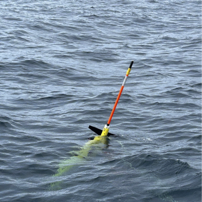

Research
Gliders

As part of an effort to ‘Revolutionize our Science’, I am co-leading an effort to adopt PAM-equipped underwater gliders as the primary focus of our future research efforts. This collaboration includes NOAA’s Pacific Islands Fisheries Science Center, Oregon State University, and the glider team at NOAA’s Southwest Fisheries Science Center. This effort began in 2024 and is ongoing; I co-lead development, the Glider Rodeo preparation, and maintain the public-facing PAM-Glider site. The WebStory ‘Ocean Gliders Listen for Whales off Oregon in Test of New Ways to Count Them’ describes our PAM-Glider project.
Adrift in the California Current

The ADRIFT in the California Current Project (‘Adrift’) used drifting acoustic recorders deployed offshore the U.S. West Coast, combined with more complete analysis of archived data from previous drifting acoustic recorder surveys, to assess the distribution of marine mammals and to characterize the marine soundscape. This study was funded, in part, by the U.S. Department of the Interior, Bureau of Ocean Energy Management (BOEM), Environmental Studies Program, Washington, DC, through Interagency Agreement Number G14M20PG00013 with the Southwest Fisheries Science Center (2020 - 2024).
Advanced Methods for Passive Acoustic Monitoring for Marine Mammals
I have led several efforts to develop and implement advanced methods for acoustical monitoring of marine mammals, including machine learning acoustic classification of marine mammals (Rankin et al. 2017, Rankin et al. 2024) and acoustic mark-recapture distance sampling to assess fraction of dolphins missed by visual observers (Rankin et al. 2020). In addition, I led efforts to develop Free and Open Source Software for Acoustics (FOSSA) collaborated on a large number of additional projects and publications outlined in the publications.
Acoustic Ecology
During my time at NOAA I was the lead acoustician on our shipboard line-transect surveys that typically ranged from late July to early December (2000 - 2007). These data provided an opportunity to examine the vocal behavior of dolphins in the Pacific Ocean (Rankin et al. 2008) and a study examining how the vocal behavior of dolphins in the tropical Pacific was inhibited by the presence of killer whales (Rankin et al. 2013).
In addition, I have collaborated on a wide array of marine mammal ecology publications ranging from Vaquita to blue whales to North Pacific right whales.
Marine Mammal Acoustics

In order to use acoustics as a tool for ecological or population level questions, we must first describe attribute recorded sounds to known species. I’ve had the opportunity to study a wide number of species, and I’ve published descriptions of the vocal behavior of many species, including: minke whales, antarctic blue whales, northern right whale dolphins, rough-toothed dolphins, Longman’s beaked whales, and North Pacific sei whales.
I have maintained a selection of sounds for public use on our Southwest Acoustic Ecology SoundCloud site.
Additional Research Efforts
Bio-acoustics as indicators of population structure: Data, techniques, and inferences (June 25-27, 2018). Co-led Investigative Workshop hosted by the National Institute for Mathematical and Biological Synthesis (NIMBIOS). As part of the workshop deliverables, I led development of the Bioacoustics Stack Exchange.